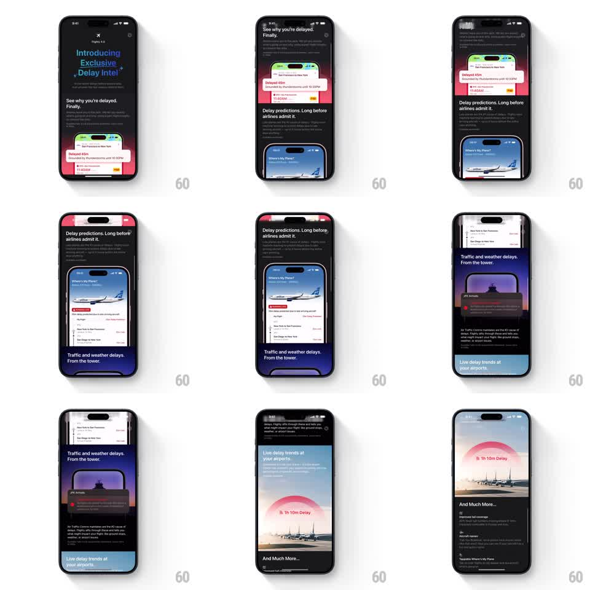

Media
Frame-by-frame

Rebuild this animation 1:1: Flighty's Delay Intel landing page - a smooth vertical scroll through a media-rich dark marketing page where headline sections and product screenshots hand off to each other in a continuous cinematic flow.

Rebuild this animation 1:1: Flighty's Delay Intel landing page - a smooth vertical scroll through a media-rich dark marketing page where headline sections and product screenshots hand off to each other in a continuous cinematic flow. ## Integration Integration: stack-agnostic spec - springs given as stiffness/damping, timed motions as duration + curve; map every value to your framework and animation library of choice. ## Scene Dark landing page opening with "Introducing Exclusive Delay Intel" over a glowing magenta-blue gradient and an embedded phone screenshot (a delay alert card). Scrolling reveals stacked sections: "See why you're delayed. Finally." with the alert screenshot; "Delay predictions. Long before airlines admit it."; "Traffic and weather delays. From the tower." over a purple tower shot; "Live delay trends at your airports." over a bright sky-blue panel with a delay arc; "And Much More..." as a checklist. ## Motion spec Pattern: scroll-driven section handoffs with pinned media. - Sections flow on normal vertical scroll with momentum; each section's headline block and its screenshot travel at slightly different rates (screenshot at ~0.9x scroll speed) for a soft parallax. - Incoming section titles fade up (translateY 20px to 0, opacity, 400ms, ease-out) as they enter the lower third of the viewport. - Screenshots scale subtly from 0.96 to 1.0 as they approach center, then hold - a focus pull. - The background gradient hue drifts between sections (magenta to indigo to sky blue), crossfading over ~600ms of scroll travel. - The final checklist section staggers its rows in (60ms apart, 250ms fade-up) on entry. ## Calibration - Parallax stays under 10% differential - this is polish, not a ride. - Each headline must fully settle before its section's screenshot reaches center; overlapping arrivals read as jank. ## Reduced motion No parallax or scale; sections fade in whole at the viewport edge. ## Don't miss - Screenshots are real product UI (delay card, tower view, trends arc) - crisp and unblurred, they carry the pitch. - The sky-blue trends panel is the page's one bright break - let it be noticeably lighter than the rest.